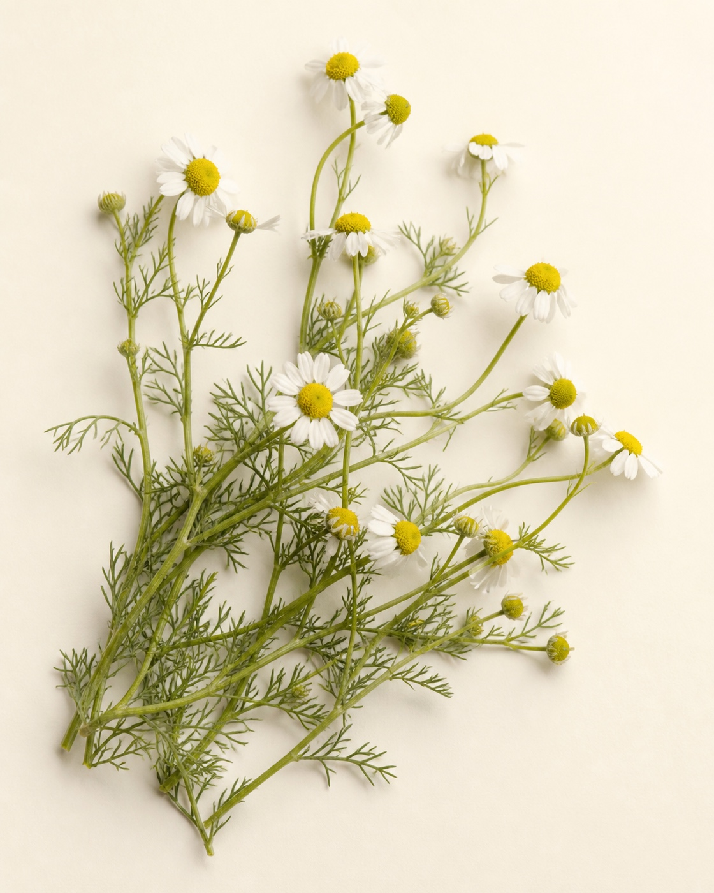
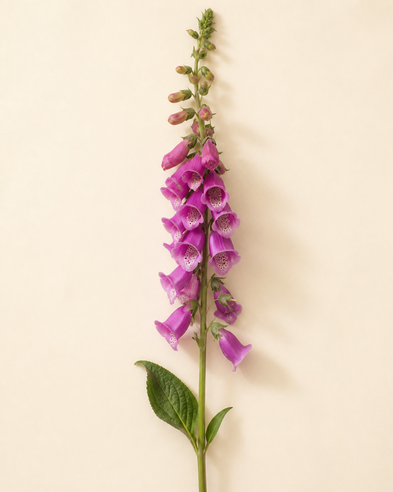
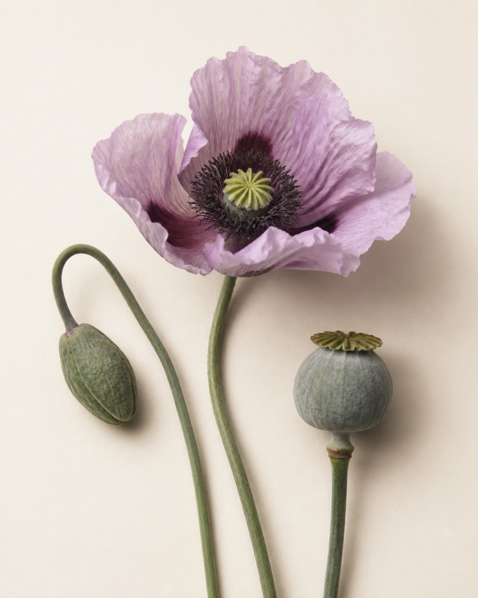
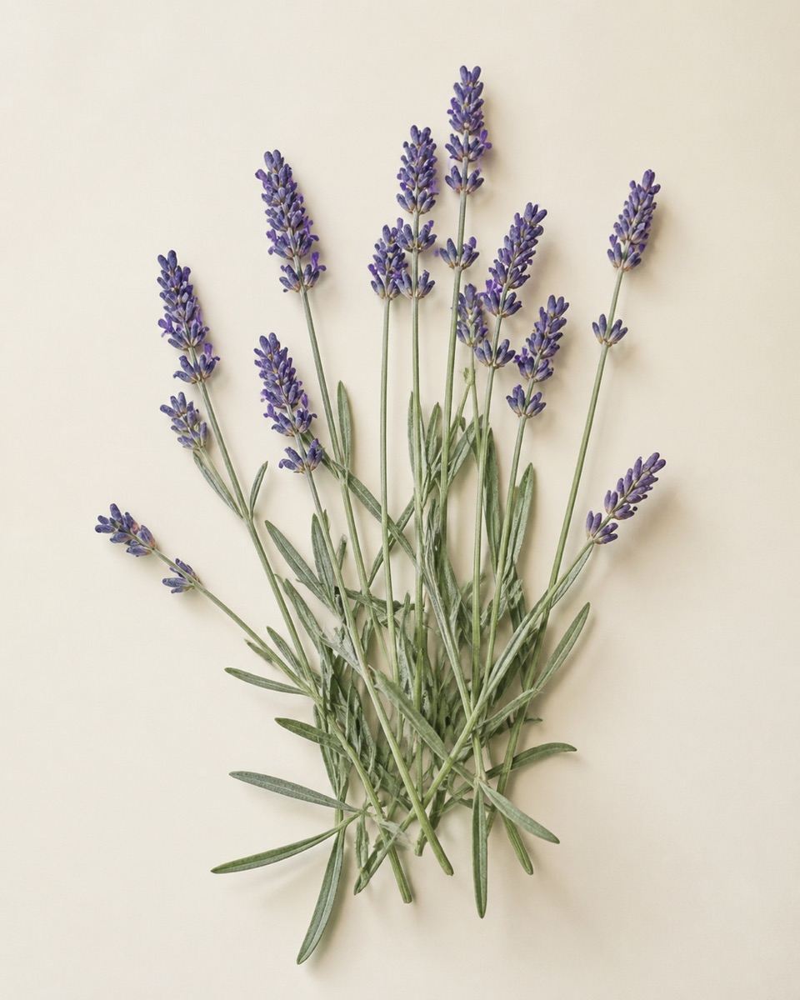

come in — the gate is open
A woman's search
for meaning.
Hi — I'm glad you wandered in.
take the walk ↓flowers grow where the light gets through
Questions I'm tending

How do we work?
The machinery of us — attention, energy, habit, and why some days everything grows and some days nothing does.

How do our bodies heal?
And why they falter. The quiet engineering inside us, and what it takes to repair it.

Could we cure all disease?
Medicine's ceiling feels higher than we assume. What if illness is a solvable engineering problem?

How do minds bloom?
Mental health, tended like any living thing — with patience, sunlight, and sometimes help.
every stop is still on the same walk
Where the walk has led
-
nov 2025 — now · still in bloomEngineering Staff · Networks for HumanityBuilding trust services — DeDi and OpenCred.
-
2023 — 2025Technical Architect · Centre for Digital Public InfrastructureDPI for data, finance & health. Grew from associate to architect.
-
2022 — 2023Founding Member · GuardiansIndia's fastest medical emergency network.
-
2022Product Supply Manager · Procter & GambleSupply chain & operations, Goa.
-
2021Risk Management Intern · Ernst & YoungRisk consulting, Gurugram.
-
the seed · where it beganB.Tech, Aerospace Engineering · IIT MadrasInter-IIT, Nirmaan pre-incubation, Shaastra, Saarang — a campus full of first tries.
planted in the commons — seeds anyone can grow
Things I've helped grow
OpenCred
Open, W3C-compliant credential infrastructure for the public good.
DeDi
DNS for trust — a decentralized directory for public registries.
Beckn
Open protocol for decentralized value discovery & exchange.
readr
An AI-powered ebook reader — ask books questions, press highlights into articles.
DEG
Beckn adapted for the energy sector — a digital energy grid.
smart-ra
Contributions to WHO SMART tooling.
more cuttings at github.com/Anusree-J
pressed pages
Publications
User Centric Credentialing & Personal Data Sharing
primary author · CDPIThe DPI Wiki
CDPIFrom Brasília to Bombay: the unlikely twins leading a global open finance revolution
CDPI · 2024DPI@2047 for Viksit Bharat: a strategic roadmap
NITI AayogDigital Energy Grid: a vision for a unified energy infrastructure
IEA / FIDETended with others, too — core architect on WHO's DPI-H working group, student mentor with Avanti Fellows, operations with the National Service Scheme.